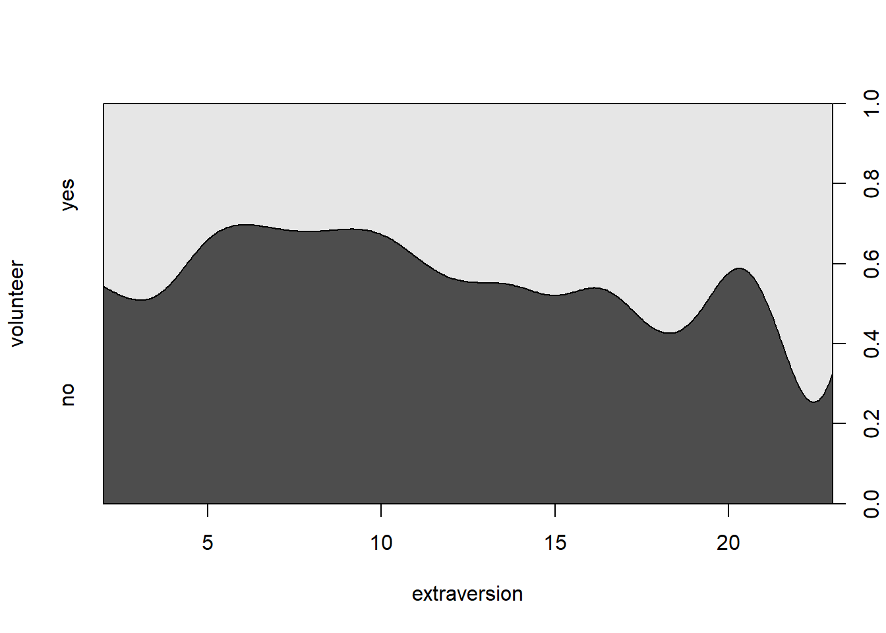

Laadige andmefailid (neeme.csv, cowles.csv, ESS.csv, pisa.csv) R’i. Määrake igale andmestikule R’is iseloomulik nimi.
Teeme PISA andmestiku alusel regressioonanalüüsi mudeli, kus sõltuvaks tunnuseks on matemaatika testi tulemus (PVMATH) ja prediktoriteks enese-tõhusus teaduses (SCIEEFF; science self-efficacy), mina-pilt loodusteadustes (SCSCIE; science self-concept).
Kui lineaarse regressiooni puhul oli sõltuv tunnus numbriline, siis logistilise regressiooni puhul on sõltuv tunnus kategoriaalne. Logistiline mudel ennustab prediktorite väärtuste abil võimalust kuuluda mingisse kategooriasse. Binaarne logistiline regressioon on selline, mille puhul on sõltuval tunnusel ainult 2 taset (nt kas inimesel esineb konkreetne haigus või mitte). Multinomiaalse logistilise regressiooni puhul on sõltuva muutuja tasemeid rohkem kui 2.
Andmetabelis nimega cowles on lisamoodulist car pärinev näidisandmestik, mis käsitleb seost tudengite isiksuseomaduste ja psühholoogilistes uurimustes osalemise valmiduse vahel. Andmestik koosneb neljast muutujast:
Esmase ülevaate saamiseks andmetest kasutage funktsiooni summary.
summary(cowles)## neuroticism extraversion sex volunteer
## Min. : 0.00 Min. : 2.00 female:780 no :824
## 1st Qu.: 8.00 1st Qu.:10.00 male :641 yes:597
## Median :11.00 Median :13.00
## Mean :11.47 Mean :12.37
## 3rd Qu.:15.00 3rd Qu.:15.00
## Max. :24.00 Max. :23.00Teeme kõigepealt logistilise regressioonimudeli, milles sõltuvaks tunnuseks valmidus osaleda uurimistöös (tunnus volunteer) ja ennustame seda ekstravertsuse kaudu. Logistilise mudeli tegemiseks kasutame funktsiooni glm (nimetus sõnadest generalized linear model). Selle kasutamine on üsna sarnane funktsiooniga lm, mille abil koostasime lineaarseid regressioonimudeleid: kõigepealt mudelisse kaastavate muutujate nimed kujul sõltuv tunnus ~ sõltumatu tunnus ning seejärel argumendi data abil tabeli nimi, millest tunnused võetakse. Funktsiooni glm puhul lisandub argument family, mille abil määrame, millist tüüpi mudelit teha tahame. Logistilise mudeli puhul paneme argumendi family väärtuseks binomial(). (Kui meil juhtub esinema puuduvaid andmeid, saame need välja jätta lisades argumendi na.action=na.omit. Samuti saaksime argumendi subset abil määrata valimit kitsendava tingimuse.)
cowles.mudel1 <- glm(volunteer ~ extraversion, data=cowles, family=binomial())Uurime mudeli väljundit.
summary(cowles.mudel1)##
## Call:
## glm(formula = volunteer ~ extraversion, family = binomial(),
## data = cowles)
##
## Deviance Residuals:
## Min 1Q Median 3Q Max
## -1.3379 -1.0584 -0.9299 1.2725 1.6243
##
## Coefficients:
## Estimate Std. Error z value Pr(>|z|)
## (Intercept) -1.13942 0.18538 -6.146 7.93e-10 ***
## extraversion 0.06561 0.01414 4.640 3.49e-06 ***
## ---
## Signif. codes: 0 '***' 0.001 '**' 0.01 '*' 0.05 '.' 0.1 ' ' 1
##
## (Dispersion parameter for binomial family taken to be 1)
##
## Null deviance: 1933.5 on 1420 degrees of freedom
## Residual deviance: 1911.5 on 1419 degrees of freedom
## AIC: 1915.5
##
## Number of Fisher Scoring iterations: 4Vaatame väljundi alaosa nimega Coefficients, mille tulbas Estimate on ära toodud mudeli parameetrite - vabaliikme (Intercept) ja regressioonikordaja - väärtused. Tulbas Std. Error on ära toodud standardviga (näitas kui suurt kordaja kõikumist võib oodata erinevates valimites). Tulbas z value on toodud z-statistiku väärtus, mis on tuntud ka Waldi statistiku nime all. See on saadud jagades regressioonikordaja väärtuse ja standardvea omaga. Tulbas Pr(>|z|) on ära toodud z-statistiku kaudu arvutatud p-väärtus, mille abil saame hinnata, kas prediktor omab olulist seost sõltuva muutujaga. Praegusel juhul on ekstravertsuse regressioonikordajale vastav p-väärtus \(3.49e-06\) ehk \(3.49 * 10^{-6}\). Antud prediktori olulisusele nivool p < .001 viitavad ka rea lõpus olevad 3 tärni.
Logistilise regressiooni puhul on regressioonikordajad logaritmskaalal ja sellisel kujul on nende tõlgendamine üsna keeruline. Olukord läheb paremaks, kui teisendame regressioonikordaja eksponent-funktsiooni abil, mis on logaritmimise pöördfunktsioon. Selle tulemusel saadud arve nimetatakse riskisuheteks või ka ansside suheteks. Riskisuhete saamiseks kasutame funktsioone coef ja exp. Funktsioonile coef anname argumendiks mudeli nime, see funktsioon eraldab mudelist ainult mudeli parameetrite väärtused. Funktsioonile exp anname argumendiks funktsioonist coef saadud väärtused. R-is saame teha seda hierahriliselt:
exp(coef(cowles.mudel1))## (Intercept) extraversion
## 0.320005 1.067813Kuidas riskisuhteid tõlgendada? 1-st suurem riskisuhte väärtus näitab, et prediktori väärtuse suurenedes ühe ühiku võrra suurenevad sündmuse esinemise šansid nii mitu korda kui on riskisuhte väärtus. 1-st väiksem riskisuhte väärtus näitab, et prediktori väärtuse suurendes ühe ühiku võrra sündmuse esinemise šansid vähenevad 1/riskisuhe arv kordi. Antud juhul on ekstravertsuse riskisuhte väärtuseks ümmardatuna 1.068. See tähendab, et kui ekstravertsuse skoor suureneb ühe punkti võrra suureneb jaatava vastuse tõenäosus 1.068 korda ehk 6.8% võrra. Kuidas me teame, et need on just jaatava (ja mitte eitava) vastuse šansid, mida numbrid näitavad? Vaikimisi käivad numbrid selle sõltuva muutuja taseme kohta, mille nimetus paikneb tähestikulises järjekorras tagapool (eespool paiknev kategooria on valitud taustakategooriaks). Antud juhul oli meie sõltuval muutujal volunteer 2 taset: no ja yes. Kuna yes algustäht paikneb tähestikus tagapool on praegusel juhul just see, mille šansse numbrid näitavad.
Lineaarse regressiooni puhul nägime, et üheks täiendavaks võimaluseks hinnata prediktorite mõju usaldusväärsust olid regressioonikordajate 95% -usaldusvahemikud. Sedasama lähenemist saame kasutada ka logistilise regressiooni puhul arvutades usaldusvahemikud riskisuhete jaoks. Usaldusvahemikud saime funktsiooni confint abil. Logistilise regressiooni puhul paneme selle ümber veel funktsiooni exp.
exp(confint(cowles.mudel1))## Waiting for profiling to be done...## 2.5 % 97.5 %
## (Intercept) 0.2217862 0.4589052
## extraversion 1.0387831 1.0980308Riskisuhte usaldusintervallide puhul on oluline vaadata, kas väärtus 1 jääb usaldusintervalli sisse. Kui nii juhtub, viitab see, et prediktori mõju pole usaldusväärne: mõnedes valimites oleks mõju suund ühesugune ja teistes valimites teistsugune. Antud juhul on ekstravertsuse mõlemad usalduspiirid ühest suuremad. Seega võime olla üsna kindlad, et ekstravertsus mõjutab uurimustes osalemise valmidust positiivselt.
Regressioonikordajad, riskisuhted ja nende usaldusvahemikud iseloomustavad eraldiseisvaid prediktoreid. Lisaks sellele on mudeli väljundis toodud ka mudeli sobitusastme näitajad. Mudeli jääkhälbimus (Residual deviance) iseloomustab meie koostatud mudeli logaritmilise tõepärafunktsiooni väärtust. Viimane põhineb mudeli järgi ennustatud ja tegelike väärtustega seotud tõenäosuste summeerimisel. Mida parem mudel, seda väiksem väärtus. Väljundis samuti toodud Null Deviance on sama näitaja ainult vabaliiget sisaldava mudeli jaoks, milles muutujate-vaheline seos puudub ehk niinimetatud nullmudel. Kui Residual deviance on väiksem kui Null deviance, tähendab see, et koostatud mudel on parem kui nullmudel. Selle üle, kas erinevus nullmudelist on piisavalt suur, saab otsustada \({\chi}^2 -\)testi (hii-ruuttesti) abil. Mingil põhjusel funktsioon glm seda välja ei arvuta ja meil tuleb seda ise teha funktsiooni anova abil. Defneerime kõigepealt ilma prediktoriteta ainult vabaliiget sisaldava nullmudeli. Selle valem on kujul “sõltuv muutuja ~ 1”.
cowles.nullmudel <- glm(volunteer ~ 1, data=cowles, family=binomial())Nüüd anname nii nullmudeli kui eelnevalt koostatud mudeli võrdlemiseks funktsioonile anova, millele ütleme argumendi test=“Chisq” abil ka, et tahame kasutada hii-ruut testi.
anova(cowles.nullmudel, cowles.mudel1, test="Chisq")## Analysis of Deviance Table
##
## Model 1: volunteer ~ 1
## Model 2: volunteer ~ extraversion
## Resid. Df Resid. Dev Df Deviance Pr(>Chi)
## 1 1420 1933.5
## 2 1419 1911.5 1 22.022 2.695e-06 ***
## ---
## Signif. codes: 0 '***' 0.001 '**' 0.01 '*' 0.05 '.' 0.1 ' ' 1Peaksime vaatama tabeli teise rea kahte viimast tulpa, milles on toodud hii-ruut statistik (Deviance), ja selle p-väärtus. Antud p-väärtuse põhjal võime öelda, et mudeli sobitusaste oli nullmudeli omast oluliselt parem (\({\chi}^2\) = 22.02, p < .001).
Lineaarse regressiooni puhul saime välja arvutada mudeli determinatsioonikordaja(\(R^2\)), mis näitas kui suure osa sõltuva tunnuse hajuvusest mudel ära kirjeldas. Logistilise regressiooni puhul saame arvutada näitajaid, mida nimetatakse pseudo-determinatsioonikordajaks. Nad varieeruvad 0-st 1-ni nagu päris determinatsioonikordaja ning näitavad mudeli sobitustusastme headust, mida suurem väärtus seda parem. Aga nagu eesliitest pseudo järeldada võib, pole need päris samasugused. Nimelt ei saa neid tõlgendada sõltuva tunnuse seletusprotsendi mõttes nii nagu lineaarse regressiooni determinatsioonikordajat. Sõltuvalt arvutuskäigust on pseudo-determinatsioonikordajaid mitut tüüpi. Arvutame praegusel juhul ühe sagedamini kasutatava, mida nimetatakse Nagelkerke \(R^2\). Selle jaoks peame kõigepealt installima lisamooduli fmsb.
install.packages("fmsb")Seejärel saame lisamooduli laadida ja kasutada selles olevat funktsiooni NagelkerkeR2, millele annamemudeli nime.
library(fmsb)
NagelkerkeR2(cowles.mudel1)## $N
## [1] 1421
##
## $R2
## [1] 0.02068324Pseudo-determinatsioonikordaja väärtused ongi tüüpiliselt üsna madalad. Kordajat kasutatakse tüüpiliselt selleks, et hinnata, kas prediktorite lisamine tegi mudelit paremaks.
Kui meil on ühe numbrilise prediktoriga logistiline mudel (nagu praegu), siis saab vastavat seost kujutada tingimusliku tihedusfunktsiooni joonise abil. Selle saame funktsiooni cdplot kaudu.
cdplot(volunteer ~ extraversion, data=cowles)
Joonisel on näha, milline on jaatavate ja eitavate vastuste osakaal valimis erinevate ekstravertsuse tasemete puhul. Heledam hall toon tähistab jaatava vastuse tõenäosust ja tumedam eitava vastuse oma.
Praegusel juhul oleme ekstravertsuse prediktorina mudelisse kaasanud toorskooride kujul. Need toorskoorid on aga suhteliselt suvalisel skaalal. See tähendab, et me ei oska eriti täpselt hinnata, kas ühe-punktiline muutus ekstravertsuse skooris on suur või väike. Seetõttu tahame vahel mõne numbrilise prediktori mudelisse kaasata standardiseerituna ehk standarhälbe ühikutesse teisendatuna. Siis saame riskisuhteid tõlgendades öelda, et prediktori muutudes ühe standardhälbe võrra muutuvad huvipakkuva sündmuse esinemise anssid nii mitu korda. Prediktori saame standardiseerida pannes funtksioonile glm antavas mudeli valemis prediktori ümber funktsiooni scale(). Teeme oma mudeli vastavalt ringi ja vaatame riskisuhteid.
cowles.mudel1 <- glm(volunteer ~ scale(extraversion), data=cowles, family=binomial())
exp(coef(cowles.mudel1))## (Intercept) scale(extraversion)
## 0.7206583 1.2910767Võime järeldada, et ekstravertsuse suurenedes ühe standardhälbe võrra suureneb uurimustes osalemise valmidus 1.29 korda ehk 29% võrra.
Mudeli parameetrite abil saame välja arvutada ka, milline on jaatava vastuse tõenäosus mingil ekstravertsuse tasemel. Logistilise regressioonimudeli parameetrid on logaritmiliselt teisendatud ansside kujul ehk keerulisemalt öeldes, vastavad tõenäosused on teisendatud logit-funktsiooni abil. Defineerime kõigepealt logit-funktsiooni pöördfunktsiooni expit, mille abil saame logaritmilised anssid tagasi tõenäosusteks.
expit <- function(x) exp(x) / (1+exp(x))Seejärel küsime funktsiooni coef abil oma mudelist parameetrite väärtused.
coef(cowles.mudel1)## (Intercept) scale(extraversion)
## -0.3275901 0.2554766Nüüd saame parameetrite väärtused anda funktsioonile expit. Seda tuleks teha sellisel kujul: kõigepealt vabaliikme väärtus, millele liidame otsa prediktori regressioonikordaja väärtuse korrutatuna meid huvitava prediktori taseme väärtusega. Kui sooviksime arvutada, milline on jaatava vastuse tõenäosus, kui ekstravertsuse skoor on 2 standardhälvet üle keskmise, näeks see välja nii.
expit(-0.3275901 + 2*0.2554766)## [1] 0.5457128Nagu näha, ennustab meie mudel sellisel juhul jaatava vastuse tõenäosuseks umbes 55%.
Mudelitesse saab prediktorina kaasata ka kategoriaalseid muutujaid. Teeme uue mudeli, lisades täiendava pretiktorina vastaja soo (tunnus sex) ja uurime mudeli väljundit.
cowles.mudel2 <- glm(volunteer ~ scale(extraversion) + sex, data=cowles, family=binomial())
summary(cowles.mudel2)##
## Call:
## glm(formula = volunteer ~ scale(extraversion) + sex, family = binomial(),
## data = cowles)
##
## Deviance Residuals:
## Min 1Q Median 3Q Max
## -1.3860 -1.0499 -0.9035 1.2533 1.6853
##
## Coefficients:
## Estimate Std. Error z value Pr(>|z|)
## (Intercept) -0.21765 0.07259 -2.998 0.00271 **
## scale(extraversion) 0.25494 0.05519 4.619 3.85e-06 ***
## sexmale -0.24662 0.10929 -2.256 0.02404 *
## ---
## Signif. codes: 0 '***' 0.001 '**' 0.01 '*' 0.05 '.' 0.1 ' ' 1
##
## (Dispersion parameter for binomial family taken to be 1)
##
## Null deviance: 1933.5 on 1420 degrees of freedom
## Residual deviance: 1906.4 on 1418 degrees of freedom
## AIC: 1912.4
##
## Number of Fisher Scoring iterations: 4Tabelist Coefficients näeme p-väärtuste abil, et mõlemad prediktorid on olulised. Kategoriaalsete muutujate puhul valitakse üks kategooriatest baaskategooriaks, millega ülejäänud kategooriaid võrreldakse. Praegusel juhul on muutujal sex kaks taset (female ja male). Vaikimisi on baaskategooriaks valitud female, tulenevalt sellest, et female on tähestukuliselt eespool võrreldes male’iga. Seega näitab vastav regressioonikordaja kui erinev on kategooria male võrreldes kategooriaga female. Miinusmärgist selle kordaja ees võime järeldada, et meeste puhul on jaatava vastuse tõenäosus naistega võrreldes madalam. Kordajate arusaadavamaks tõlgendamiseks arvutame neist jällegi riskisuhted.
exp(coef(cowles.mudel2))## (Intercept) scale(extraversion) sexmale
## 0.8044055 1.2903863 0.7814391Ekstravertsuse riskisuhe on jäänud samaks. Vastaja soo riskisuhtest võime järeldada, et meeste puhul on jaatava vastamise tõenäosus 78% naiste jaatava vastuse tõenäosusest. ümberpööratuna väljendudes on naiste puhul jaatava vastuse tõenäosus \(1/0.78 = 1.28\) korda suurem kui meeste puhul.
Hindame prediktoreid ka 95%-usaldusvahemike abil.
exp(confint(cowles.mudel2))## Waiting for profiling to be done...## 2.5 % 97.5 %
## (Intercept) 0.6974271 0.9271049
## scale(extraversion) 1.1587831 1.4388556
## sexmale 0.6304839 0.9678052Nagu näha ei sisalda kummagi prediktori vahemikud väärtust 1 ja sellest tulenevalt võib neid lugeda usaldusväärseteks.
Arvutame mudeli pseudo-determinatsioonikordaja.
NagelkerkeR2(cowles.mudel2)## $N
## [1] 1421
##
## $R2
## [1] 0.02543564See on jäänud enam-vähem samaks, nii et soo lisamine mudeli kirjeldusvõimet väga palju paremaks ei teinud.
Vaatame lõpetuseks veel mudeli-järgsete tõenäosuste arvutamist expit funktsiooni abil. Selleks pidime kõigepealt saama kätte mudeli parameetrite väärtused.
coef(cowles.mudel2)## (Intercept) scale(extraversion) sexmale
## -0.2176518 0.2549416 -0.2466181Arvutame jaatava vastuse tõenäosuse kui vastaja ekstravertsus on 2 standardhälvet üle keskmise ja sooks naine. Kuna female oli antud mudelis baaskategooriaks, siis jääb soo regressioonikordaja arvutusest välja.
expit(-0.2176518 + 2 * 0.2549416)## [1] 0.5725423Arvutame jaatava vastuse tõenäosuse kui vastaja ektravertsus on 2 standardhälvet üle keskmise ja sooks mees. Sellisel juhul lisame arvutusse ka soo regressioonikordaja.
expit(-0.2176518 + 2 * 0.2549416 - 0.2466181)## [1] 0.5114013Nagu näha on sellise ekstravertsuse taseme puhul naistel jaatava vastuse tõenäosus 57% ja meestel 51%.
Vaatame põgusalt ka logistilist regressiooni sõltuva muutuja korral, millel on rohkem kui kaks taset. Multinomiaalset logistilist regressiooni on R-is võimalik teha lisamooduli mlogit samanimelise funktsiooni abil. Installime ja laadime selle mooduli.
install.packages("mlogit")library(mlogit)Andmetabelis ESS on 4 muutujat 2008. aasta Euroopa Sotsiaaluuringu Eesti vastajaid puudutavatest andmetest. üks tunnustest puudutab seda, millise erakonna poolt hääletas vastaja viimastel valimistel (tunnus partei). Näitlikustamise lihtsuse huvides olen antud tabelisse alles jätnud ainult 3 valimis kõige suuremat toetust omavat parteid (IRL, Kesk ja Reform). Teeme mudeli, milles ennustame erakondlikku eelistust vastaja vanuse kaudu. Selleks kasutame funktsiooni mlogit, millele tuleb ette anda mudelit kirjeldav valem natuke teisel kujul kui funktsioonile glm: tilde järel oleva valemi parempoolse osa alguses on (1 |) ja alles seejärel prediktorid. (Keerulisem valem tuleb sellest, et funktsiooniga mlogit saab vajadusel teha keerulisemaid mudeleid kui funktsiooniga glm. Praegu jätame need võimalused lihtsalt kasutamata.) Lisaks peame lisama ka argumendi shape=“wide”, mis ütleb funktsioonile, millisel kujul meie andmed on. Funktsioon mlogit valib ühe sõltuva muutuja kategooria baaskategooriaks, millega ülejäänud kategooriaid võrreldakse. Vaikimisi võetakse baaskategooriaks tähestiku järjekorras kõige esimene kategooria, antud juhul oleks selleks IRL. Kui tahame baaskategooriat muuta, saab seda teha argumendi reflevel lisamise abil nt nii: reflevel=“Kesk”.
ess.mudel1 <- mlogit(partei ~ 1 | vanus, data=ESS, shape="wide")Uurime mudeli väljundit.
summary(ess.mudel1)##
## Call:
## mlogit(formula = partei ~ 1 | vanus, data = ESS, shape = "wide",
## method = "nr", print.level = 0)
##
## Frequencies of alternatives:
## IRL Kesk Reform
## 0.19940 0.35801 0.44260
##
## nr method
## 4 iterations, 0h:0m:0s
## g'(-H)^-1g = 0.000986
## successive function values within tolerance limits
##
## Coefficients :
## Estimate Std. Error t-value Pr(>|t|)
## Kesk:(intercept) -0.6269224 0.3475545 -1.8038 0.0712611 .
## Reform:(intercept) 1.1064625 0.3145498 3.5176 0.0004355 ***
## Kesk:vanus 0.0230663 0.0063845 3.6129 0.0003028 ***
## Reform:vanus -0.0064190 0.0061135 -1.0500 0.2937284
## ---
## Signif. codes: 0 '***' 0.001 '**' 0.01 '*' 0.05 '.' 0.1 ' ' 1
##
## Log-Likelihood: -677.75
## McFadden R^2: 0.024981
## Likelihood ratio test : chisq = 34.729 (p.value = 2.8747e-08)Väljundist on näha, et mudeli sobitusaste näitajad hii-ruut (Likelihood ratio test) ja pseudo- determinatsioonikordaja (McFadden R2) on juba välja arvutatud. Hii-ruut-statistiku p-väärtuse väiksuse põhjal võime öelda, et mudel on parem kui nullmudel. Regressioonikordajad on toodud kummagi partei jaoks eraldi. Nende põhjal on näha, et võrreldes IRL-iga suurendab kasvav vanus Keskerakonna poolt hääletamise tõenäosust, samas kui Reformierakonna toetamise tõenäosust see olulisel määral ei mõjuta. Vanuse mõju suurust saab hinnata riskisuhete abil.
data.frame(exp(coef(ess.mudel1)))## exp.coef.ess.mudel1..
## Kesk:(intercept) 0.5342334
## Reform:(intercept) 3.0236432
## Kesk:vanus 1.0233344
## Reform:vanus 0.9936015Keskerakonna regressioonikordaja riskisuhte alusel võime järeldada, et lisanduv eluaasta suurendab Keskerakonna toetamise suhtelist tõenäosust võrreldes IRL-i toetamise tõenäosusega 1.02 korda ehk 2%.
summary(neeme)
prop.table(table(neeme$valmidus))*100#jaotus protsentideslibrary(ggplot2)
ggplot(neeme, aes(E))+
geom_histogram()+
theme_classic()+
labs(x = "Ekstravertsus", y = "Kogus")mudel.yl2 <- glm(valmidus~N+E+O+A+C, data = neeme, family = binomial())
summary(mudel.yl2)round(exp(coef(mudel.yl2)),3)
round(exp(confint(mudel.yl2)),3)#Siin võis tekkid osadel probleem hii-ruudu arvutamisega.
# Kui kustutate andmetest puuduvad andmed, siis peaks nende kahe mudeli võrdlus töötama:
neeme2 <- na.omit(neeme)#see rida loob uue andmestiku, kus ei ole NA'sid
#Nüüd teen mõlemad mudedlid selle uue andmestikuga:
mudel.yl2 <- glm(valmidus~N+E+O+A+C, data = neeme2, family = binomial())
mudel.yl2.null <- glm(valmidus~1, data = neeme2, family = binomial())
anova(mudel.yl2, mudel.yl2.null, test = "Chisq")NagelkerkeR2(mudel.yl2)ess.mudel2 <- mlogit(partei ~ 1 | vanus + sugu + aastaid_koolis, data=ESS, shape="wide")
summary(ess.mudel2 )
# Riskisuhted
data.frame(exp(coef(ess.mudel2)))
# Riskisuhete usaldusvahemikud
data.frame(exp(confint(ess.mudel2)))